Править дешевле, чем перегенерировать. Какой инструмент для какой правки — по 150 правкам на одних и тех же девяти картинках.
Хороший кадр редко бывает идеальным: лишний велосипед, не тот цвет пальто, рука держит пинцет «сквозь пальцы», нужен формат 16:9 вместо 4:5. Перегенерация меняет всё сразу. Модели редактирования меняют одно, а остальное оставляют. В серии 5 одни и те же девять наших картинок (портрет, человек в полный рост, ночная кухня, селфи, мастер-часовщик со сломанной рукой из SDXL, остановка с табличкой, продукт-шот, Марен, арт-киборг) прошли через пять инструментов — по 2 сида на каждую задачу, всего 150 правок.
Оценка: сходство лица ArcFace с исходником, «сохранность центра» для outpaint и полноразмерные кроп-листы одних и тех же участков. Считали на арендованной RTX PRO 6000: локальная видеокарта была занята. Ушёл 1 час, $2,45. Правка на Qwen 2.1 там занимала 3–10 с, на Krea — 8–13 с, на Qwen-Edit 2511 — около 50 с. На локальной машине (16 ГБ) новые workflow считают за 11–30 с.
| Правка | Лучше всего | Почему | Чего избегать |
|---|---|---|---|
| убрать объект | Qwen 2.1 | все велосипеды ушли, улица и человек на месте | Krea Turbo оставил дальний велосипед; 2511 перекадрирует |
| перекрасить | Qwen 2.1 или Krea General | справились все; Krea мягче сохраняет фактуру и арт-стиль | — |
| сменить свет | Krea General | тёплое утро, лицо и поза те же | 2511 перерисовал женщину (другое лицо, светлее волосы) |
| сменить фон, лицо оставить | Qwen 2.1 | ArcFace 0,95–0,96, чистая новая сцена | Krea тащит остатки старого фона (трамвайные рельсы) |
| сменить одежду, лицо оставить | Qwen 2.1 | естественный ворот, родинка на месте, ArcFace 0,95 | Krea: гигантский ворот до подбородка; Identity Edit теряет родинку |
| добавить предмет | Qwen 2.1 (точно куда сказали) или Krea | кот у стакана, лаванда у флакона — все трое | 2511 добавляет лишнее (вторая веточка) |
| текст на табличке | Qwen 2.1 | «LINIE 42 HAUPTBAHNHOF» точно на обоих сидах, нужный цвет | Krea на одном сиде вернул «15 Hauptbahnhof»; 2511 разорвал слово |
| починить руку | Qwen 2.1, весь кадр | нормальный хват пинцета | Krea правку игнорирует; 2511 в режиме «вырезать-вставить» дорисовал второй инструмент |
| outpaint / новый формат | Qwen 2.1, новый холст | 16:9 и 9:16 продолжают сцену естественно | серые поля + «заполни» срабатывают у 2 из 6 вариантов |
| замена головы | BFS на Qwen 2.1 | сохраняет выражение и свет тела-кадра | только наши персонажи, никогда реальные люди |
| апскейл до 4K | SeedVR2 7B sharp | самая естественная новая деталь, кадр не меняется | 3B — «трещины» на коже; USDU перерисовывает веснушки |
Главный вывод: универсальный инструмент для правок у нас теперь — Qwen-Image 2.1. Он уже стоял на диске как модель генерации (серия 2) и оказался лучшим редактором почти во всём. Krea General Edit остаётся для света и мягкой перекраски, когда важно сохранить «фотографичность» исходника. Qwen-Edit 2511 медленнее в 5–10 раз и самовольно меняет кадрирование, поэтому в повседневные правки не попал.
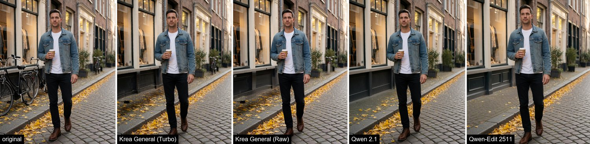
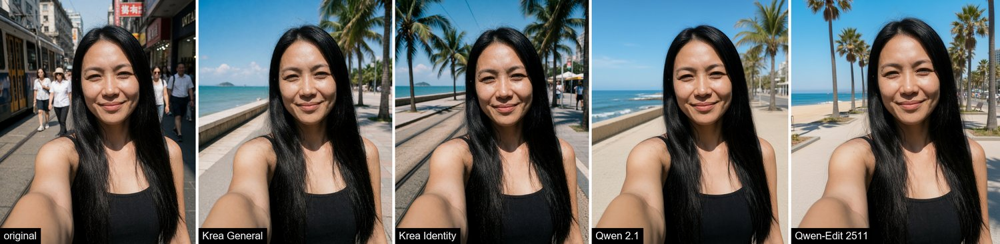
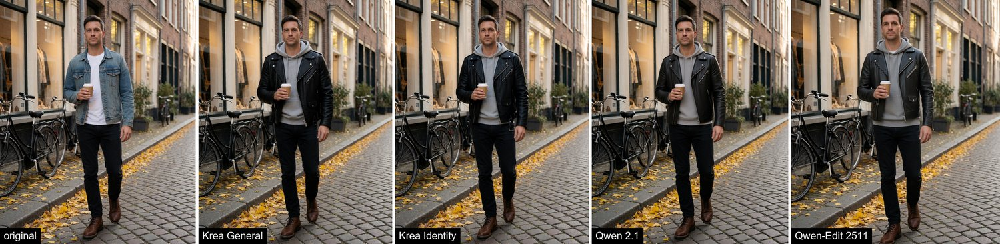
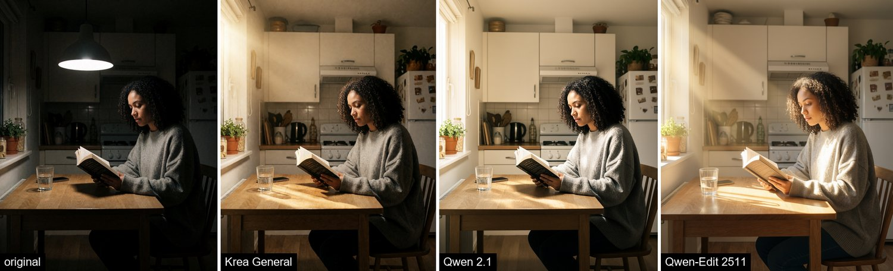
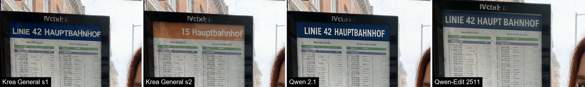
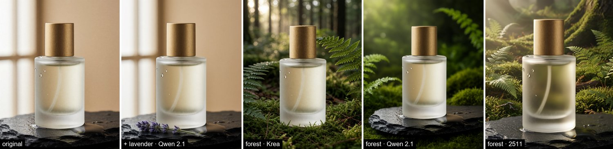
Кадр SDXL из серии 2: пинцет проходит сквозь кисть, а кончик торчит снизу отдельно. Пробовали два способа: правку всего кадра и «вырезать руку → увеличить до 1 МП → поправить → вклеить обратно с мягким краем».
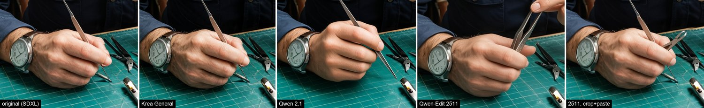
Для видео и сторис нужен другой формат. Сравнили два подхода. Серые поля: картинку уменьшают, добавляют поля и просят их заполнить — Qwen советует для этого свою официальную формулировку «Extend the image beyond its boundaries using outpainting…». Новый холст: картинка идёт референсом, а выход сразу нужного размера.
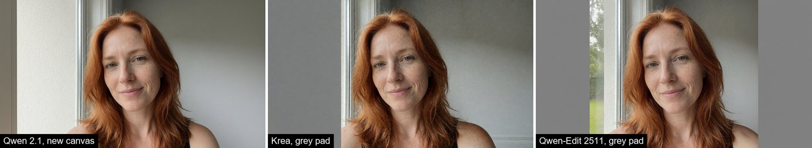
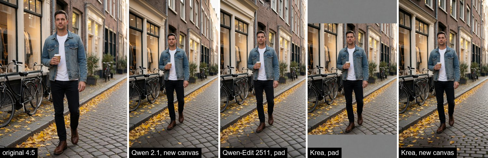
BFS (Best Face Swap) — набор LoRA, которые переносят голову с одной картинки на тело другой: поза, одежда, свет и место остаются от «тела». Делаем это только с нашими сгенерированными персонажами. Сначала всегда пробуем перенос через Identity Edit или LoRA персонажа.
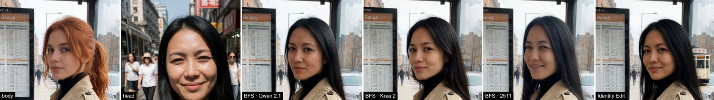
| Пара (тело ← голова) | BFS · Qwen 2.1 | BFS · Krea 2 | BFS · 2511 | Identity Edit |
|---|---|---|---|---|
| остановка ← селфи | 0,27–0,47 | 0,32–0,34 | 0,37–0,44 | 0,33–0,43 |
| селфи ← Марен | 0,69–0,75 | 0,59–0,61 | 0,49–0,50 | 0,57–0,65 |
ArcFace к голове-референсу. Разброс большой, поэтому выбираем на глаз из 2–3 сидов. BFS для Qwen 2.1 обучен на базовой модели, но на нашей Turbo работает так же (0,72–0,75 против 0,69–0,71), и докачивать базу не нужно.
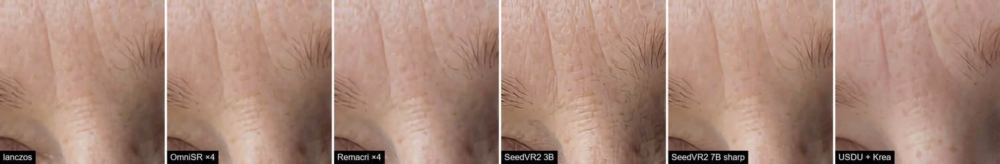
| Метод | Время (PRO 6000) | Вывод |
|---|---|---|
| SeedVR2 7B sharp, коррекция цвета lab | 25 с | лучшая деталь, кадр не меняется; локально 12 с |
| OmniSR ×4 | 6 с | чёткая копия исходной фактуры, безопасный вариант |
| Remacri ×4 | 7–9 с | чуть пластиковая кожа |
| SeedVR2 3B | 34–38 с | артефакты «трещин» на коже |
| Ultimate SD Upscale + Krea (denoise 0,22) | 31–39 с | генеративный: меняет детали, не для персонажа и продукта |
Для ИИ-агентов: эта глава в Markdown · llms.txt